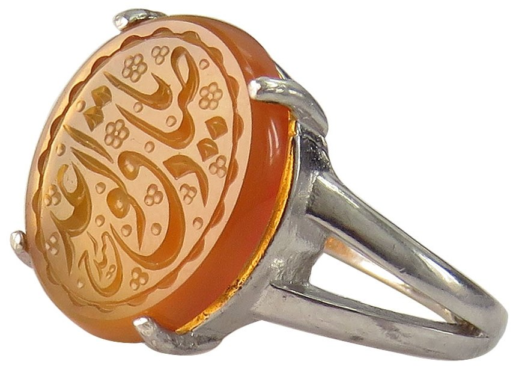

بماذا سيصفك الله
من أنت؟
وصف الله عز وجل في كتابه العزيز مجموعة من الأشخاص سواء من الذين حددهم بأسمائهم أو وصفهم فقط ومن أولئك الخيرين
إبراهيم: النبي الصديق
وَاذْكُرْ فِي الْكِتَابِ إِبْرَاهِيمَ ۚ إِنَّهُ كَانَ صِدِّيقًا نَّبِيًّا
إسماعيل: صادق الوعد

وَاذْكُرْ فِي الْكِتَابِ إِسْمَاعِيلَ ۚ إِنَّهُ كَانَ صَادِقَ الْوَعْدِ وَكَانَ رَسُولًا نَّبِيًّا
نوح: عبدًا شكورًا
ذُرِّيَّةَ مَنْ حَمَلْنَا مَعَ نُوحٍ ۚ إِنَّهُ كَانَ عَبْدًا شَكُورًا
أيوب: صابراً نعم العبد و أواب
إِنَّا وَجَدْنَاهُ صَابِرًا ۚ نِّعْمَ الْعَبْدُ ۖ إِنَّهُ أَوَّابٌ
محمد: ذو خلق عظيم
وَإِنَّكَ لَعَلى خُلُقٍ عَظِيمٍ
بالمقابل نجد من وصفهم الله بأنهم سيئين ومنهم
فرعون: من المفسدين و المسرفين
إِنَّ فِرْعَوْنَ عَلا فِي الأَرْضِ وَجَعَلَ أَهْلَهَا شِيَعًا يَسْتَضْعِفُ طَائِفَةً مِنْهُمْ يُذَبِّحُ أَبْنَاءَهُمْ وَيَسْتَحْيِي نِسَاءَهُمْ إِنَّهُ كَانَ مِنَ الْمُفْسِدِينَ
مِن فِرْعَوْنَ ۚ إِنَّهُ كَانَ عَالِيًا مِّنَ الْمُسْرِفِينَ
قارون: باغي
إِنَّ قَارُونَ كَانَ مِنْ قَوْمِ مُوسَى فَبَغَى عَلَيْهِمْ
ونجد أيضاً أوصاف لأنواع من البشر يحذرنا الله أن نكون منهم أو معهم. مثلاً
وَلَا تُطِعْ كُلَّ حَلَّافٍ مَّهِينٍ * هَمَّازٍ مَّشَّاءٍ بِنَمِيمٍ * مَّنَّاعٍ لِّلْخَيْرِ مُعْتَدٍ أَثِيمٍ * عُتُلٍّ بَعْدَ ذَٰلِكَ زَنِيمٍ
ان الله لا يهدي من هو مسرف كذاب
وَيْلٌ لِلْمُطَفِّفِينَ * الَّذِينَ إِذَا اكْتَالُوا عَلَى النَّاسِ يَسْتَوْفُونَ * وَإِذَا كَالُوهُمْ أَوْ وَزَنُوهُمْ يُخْسِرُونَ
ويل لكل افاك اثيم
وَيْلٌ لِّكُلِّ هُمَزَةٍ لُّمَزَةٍ *الَّذِي جَمَعَ مَالا وَعَدَّدَهُ * يَحْسَبُ أَنَّ مَالَهُ أَخْلَدَهُ
تخيل أن القرآن مازال ينزل وذكرك الله فيه. فما هي الصفة التي سيصفك بها الله وهو أعلم بك وبما تظهر وما تخفي.